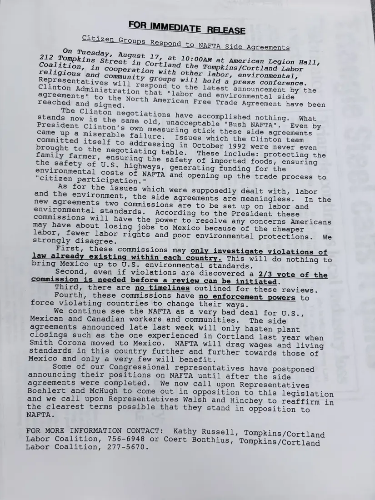

Press release, 1 page
Press release: citizen groups respond to the NAFTA side agreements
August 17, [1993]Date inferred
The Coalition and other labor, environmental, religious, and community groups announce a press conference in Cortland on Tuesday, August 17, to answer the Clinton administration's labor and environmental side agreements to NAFTA, which they say lack timelines and enforcement and will hasten plant closings like Smith Corona's.
The year is inferred from the NAFTA side agreements, announced in August 1993; August 17 fell on a Tuesday in 1993.
Download or cite this itemPages


(open zoom view)Read the page text (machine-read, mostly readable)
This text was generated automatically from the photograph and has not been corrected. The image is the authoritative record.
FOR IMMEDIATE RELEASE nm Tues 212 Tompkins strentgust 17, at 10:00am at American Legion Hall, Coalition ae tn Cortland the Tompkins/Cortland Labor wah ’ cooperation with other labor, environmental, Clinto ini : agreements" to the gone at "labor and environmental side reached and Rone, ican Free Trade Agreement have been The Clinton negotiations have accompli j - plished nothing. What San the same old, unacceptable "Bush NAFTA". Even by linton’s Own measuring stick these side agreements came up a miserable failure. Issues which the Clinton team Roa itself to addressing in October 1992 were never even rought to the negotiating table. These include: protecting the family farmer, ensuring the safety of imported foods, ensuring the safety CL U. SE highways, generating funding for the environmental costs of NAFTA and opening up the trade process to "citizen participation." As for the issues which were supposedly dealt with, labor and the environment, the side agreements are meaningless. In the new agreements two commissions are to be set up on labor and environmental standards. According to the President these commissions will have the power to resolve any concerns Americans may have about losing jobs to Mexico because of the cheaper labor, fewer labor rights and poor environmental protections. We strongly disagree. First, these commissions may only investigate violations of law already existing within each country. This will do nothing to bring Mexico up to U.S. environmental standards. Second, even if violations are discovered a 2/3 vote of the commission is needed before a review can be initiated. Third, there are no timelines outlined for these reviews. Fourth, these commissions have no enforcement powers to force violating countries to change their ways. We continue see the NAFTA as a very bad deal for URS, Mexican and Canadian workers and communities. The side agreements announced late last week will only hasten plant closings such as the one experienced in Cortland last year when Smith Corona moved to Mexico. NAFTA will drag wages and living standards in this country further and further towards those of Mexico and only a very few will benefit. Some of our Congressional representatives have postponed announcing their positions on NAFTA until after the side agreements were completed. We now call upon Representatives Boehlert and McHugh to come out in opposition to this legislation and we call upon Representatives Walsh and Hinchey to reaffirm in the clearest terms possible that they stand in opposition to NAFTA. FOR MORE INFORMATION CONTACT: Kathy Russell, Tompkins/Cortland Labor Coalition, 756-6948 or Coert Bonthius, Tompkins/Cortland Labor Coalition, 277-5670.
See something wrong, or recognize a person or event? Send a correction. If you hold rights in this item or think it should not be public, write to the same address.